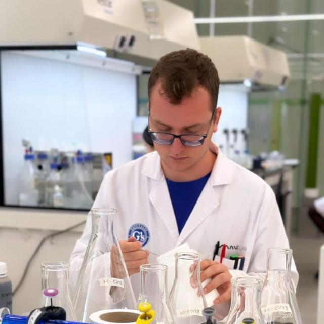

Sobre Mí
Soy graduado en Biotecnología por la Universidad de Almería y tengo un Máster en Biotecnología Industrial y Agroalimentaria. Durante mis estudios, adquirí experiencia en técnicas de biología molecular, microbiología y bioinformática.
Actualmente, estoy involucrado en un proyecto de bioinformática aplicada a cultivos subtropicales y mediterráneos. Además, tengo experiencia en control de calidad y microbiología en la industria cosmética.

Publicaciones y Trabajos Académicos
🔍 Trabajo Fin de Grado: Evolución de grupos microbianos funcionales en el co-compostaje del alga invasora Rugulopteryx okamurae
Este estudio analiza la evolución de comunidades microbianas durante el compostaje del alga invasora Rugulopteryx okamurae, explorando su potencial como biofertilizante.
🔍 Trabajo Fin de Máster: Búsqueda de soportes para la inoculación de bacterias degradadoras de plásticos en suelos
Investigación sobre distintos soportes que permiten mantener la viabilidad y actividad enzimática de bacterias capaces de degradar plásticos en entornos contaminados.
🔍 Publicación a congreso: CO-COMPOSTAJE DE ARRIBAZONES DE R. okamurae CON RESIDUOS AGRÍCOLAS Y DE JARDINERÍA
Presentado en el 50º Seminario de técnicos y especialistas en horticultura, MAPAMA (Canarias, 2021). Se evaluó la viabilidad del compostaje del alga invasora Rugulopteryx okamurae con residuos agrícolas para generar productos sostenibles.